7.3 Volume
Having discussed about the surface areas of cylinder, cone, sphere, hemisphere and frustum, we shall now discuss about the volumes of these solids.
Volume refers to the amount of space occupied by an object. The volume is measured in cubic units.
7.3.1 Volume of a solid right circular cylinder
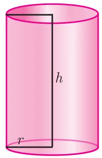
The volume of a right circular cylinder of base radius ‘\(r\)’ and height ‘\(h\)’ is given by \(V = (\text{Base Area}) \times (\text{Height}) = \pi r^2 \times h = \pi r^2 h\) cubic units.
Therefore,
Volume of a cylinder \(= \pi r^2 h\) cu. units.
7.3.2 Volume of a hollow cylinder (volume of the material used)
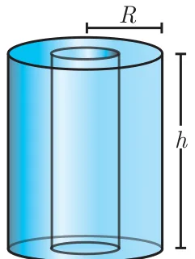
Let the internal and external radii of a hollow cylinder be \(r\) and \(R\) units respectively. If the height of the cylinder is \(h\) units then
The volume \(V = \begin{Bmatrix}\text{volume of the}\\ \text{outer cylinder}\end{Bmatrix} - \begin{Bmatrix}\text{volume of the}\\ \text{inner cylinder}\end{Bmatrix}\)
\(V = \pi R^2 h - \pi r^2 h = \pi(R^2 - r^2)h\)
Volume of a hollow cylinder \(= \pi(R^2 - r^2)h\) cu. units.
Example 7.15
Find the volume of a cylinder whose height is 2 m and whose base area is \(250 \text{ m}^2\).
Solution
Let \(r\) and \(h\) be the radius and height of the cylinder respectively.
Given that, height \(h = 2\) m, base area \(= 250 \text{ m}^2\)
Now, volume of a cylinder \(= \pi r^2 h\) cu. units
\(= \text{base area} \times h\)
\(= 250 \times 2 = 500 \text{ m}^3\)
Therefore, volume of the cylinder \(= 500 \text{ m}^3\)
Thinking Corner
- If the height is inversely proportional to the square of its radius, the volume of the cylinder is \(\underline{\qquad}\).
- What happens to the volume of the cylinder with radius \(r\) and height \(h\), when its (a) radius is halved (b) height is halved.
Example 7.16
The volume of a cylindrical water tank is \(1.078 \times 10^6\) litres. If the diameter of the tank is 7 m, find its height.
Solution
Let \(r\) and \(h\) be the radius and height of the cylinder respectively.
Given that, volume of the tank \(= 1.078 \times 10^6 = 1078000\) litre
\(= 1078 \text{ m}^3 \qquad \left(\because 1\,l = \frac{1}{1000} \text{ m}^3\right)\)
diameter \(= 7\) m \(\Rightarrow\) radius \(= \frac{7}{2}\) m
volume of the tank \(= \pi r^2 h\) cu. units
\(1078 = \frac{22}{7} \times \frac{7}{2} \times \frac{7}{2} \times h\)
Therefore, height of the tank is 28 m
Example 7.17
Find the volume of the iron used to make a hollow cylinder of height 9 cm and whose internal and external radii are 21 cm and 28 cm respectively.
Solution
Let \(r\), \(R\) and \(h\) be the internal radius, external radius and height of the hollow cylinder respectively.
Given that, \(r = 21\) cm, \(R = 28\) cm, \(h = 9\) cm
Now, volume of hollow cylinder \(= \pi(R^2 - r^2)h\) cu. units
\(= \frac{22}{7}(28^2 - 21^2) \times 9\)
\(= \frac{22}{7}(784 - 441) \times 9 = 9702\)
Therefore, volume of iron used \(= 9702 \text{ cm}^3\)
Example 7.18
For the cylinders \(A\) and \(B\) (Fig. 7.27),
- find out the cylinder whose volume is greater.
- verify whether the cylinder with greater volume has greater total surface area.
- find the ratios of the volumes of the cylinders \(A\) and \(B\).
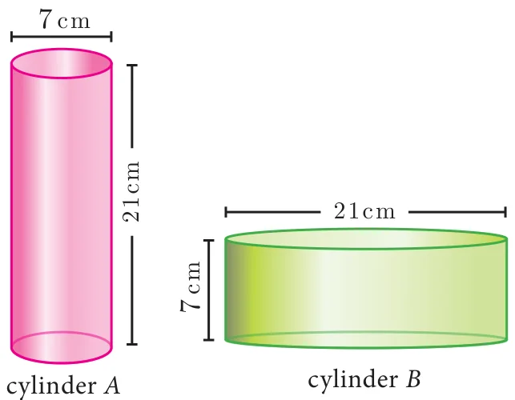
Solution
Volume of cylinder \(= \pi r^2 h\) cu. units
Volume of cylinder \(A = \frac{22}{7} \times \frac{7}{2} \times \frac{7}{2} \times 21\)
\(= 808.5 \text{ cm}^3\)
Volume of cylinder \(B = \frac{22}{7} \times \frac{21}{2} \times \frac{21}{2} \times 7\)
\(= 2425.5 \text{ cm}^3\)
Therefore, volume of cylinder \(B\) is greater than volume of cylinder \(A\).
T.S.A. of cylinder \(= 2\pi r(h + r)\) sq. units
T.S.A. of cylinder \(A = 2 \times \frac{22}{7} \times \frac{7}{2} \times (21 + 3.5) = 539 \text{ cm}^2\)
T.S.A. of cylinder \(B = 2 \times \frac{22}{7} \times \frac{21}{2} \times (7 + 10.5) = 1155 \text{ cm}^2\)
Hence verified that cylinder \(B\) with greater volume has a greater surface area.
\(\dfrac{\text{Volume of cylinder A}}{\text{Volume of cylinder B}} = \dfrac{808.5}{2425.5} = \dfrac{1}{3}\)
Therefore, ratio of the volumes of cylinders \(A\) and \(B\) is 1:3.
7.3.3 Volume of a right circular cone
Let \(r\) and \(h\) be the radius and height of a cone then its volume
\(V = \frac{1}{3}\pi r^2 h\) cu. units.
Demonstration
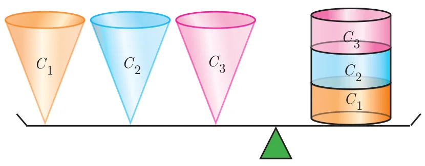
- Consider a right circular cylinder and three right circular cones of same base radius and height as that of the cylinder.
- The contents of three cones will exactly occupy the cylinder.
From, Fig.7.28 we see that,
\(3 \times (\text{Volume of a cone}) = \text{Volume of cylinder}\)
\(= \pi r^2 h\) cu. units
Volume of a cone \(= \frac{1}{3}\pi r^2 h\) cu. units
Example 7.19
The volume of a solid right circular cone is \(11088 \text{ cm}^3\). If its height is 24 cm then find the radius of the cone.
Solution
Let \(r\) and \(h\) be the radius and height of the cone respectively.
Given that, volume of the cone \(= 11088 \text{ cm}^3\)
\(\frac{1}{3}\pi r^2 h = 11088\)
\(\frac{1}{3} \times \frac{22}{7} \times r^2 \times 24 = 11088\)
\(r^2 = 441\)
Therefore, radius of the cone \(r = 21\) cm
Thinking Corner
- Is it possible to find a right circular cone with equal (a) height and slant height (b) radius and slant height (c) height and radius.
- There are two cones with equal volumes. What will be the ratio of their radius and height?
Example 7.20
The ratio of the volumes of two cones is 2:3. Find the ratio of their radii if the height of second cone is double the height of the first.
Solution
Let \(r_1\) and \(h_1\) be the radius and height of the cone-I and let \(r_2\) and \(h_2\) be the radius and height of the cone-II.
Given that, \(h_2 = 2h_1\) and \(\dfrac{\text{Volume of the cone I}}{\text{Volume of the cone II}} = \dfrac{2}{3}\)
\(\dfrac{\frac{1}{3}\pi r_1^2 h_1}{\frac{1}{3}\pi r_2^2 h_2} = \dfrac{2}{3} \Rightarrow \dfrac{r_1^2}{r_2^2} \times \dfrac{h_1}{2h_1} = \dfrac{2}{3}\)
\(\dfrac{r_1^2}{r_2^2} = \dfrac{4}{3} \Rightarrow \dfrac{r_1}{r_2} = \dfrac{2}{\sqrt{3}}\)
Therefore, ratio of their radii \(= 2 : \sqrt{3}\)
Progress Check
- Volume of a cone is the product of its base area and \(\underline{\qquad}\).
- If the radius of the cone is doubled, the new volume will be \(\underline{\qquad}\) times the original volume.
- Consider the cones given in Fig.7.29
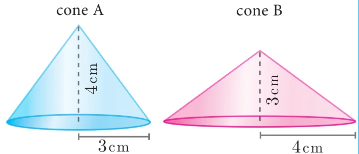
Fig. 7.29 - Without doing any calculation, find out whose volume is greater?
- Verify whether the cone with greater volume has greater surface area.
- Volume of cone A : Volume of cone B \(= ?\)
7.3.4 Volume of sphere
Let \(r\) be the radius of a sphere then its volume is given by \(V = \frac{4}{3}\pi r^3\) cu. units.
Demonstration
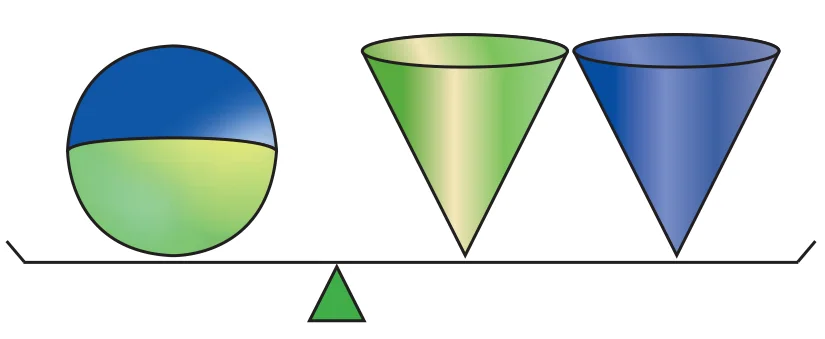
- Consider a sphere and two right circular cones of same base radius and height such that twice the radius of the sphere is equal to the height of the cones.
- Then we can observe that the contents of two cones will exactly occupy the sphere.
From the Fig.7.30, we see that
Volume of a sphere \(= 2 \times (\text{Volume of a cone})\)
where the diameters of sphere and cone are equal to the height of the cone.
\(= 2\left(\frac{1}{3}\pi r^2 h\right)\)
\(= \frac{2}{3}\pi r^2(2r), \quad (\because h = 2r)\)
Volume of a sphere \(= \frac{4}{3}\pi r^3\) cu. units
7.3.5 Volume of a hollow sphere / spherical shell (volume of the material used)
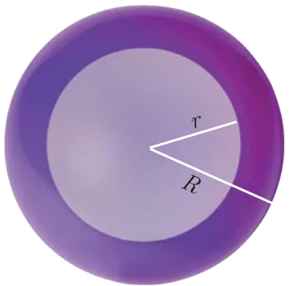
Let \(r\) and \(R\) be the inner and outer radius of the hollow sphere.
Volume enclosed between the outer and inner spheres
\(= \frac{4}{3}\pi R^3 - \frac{4}{3}\pi r^3\)
Volume of a hollow sphere \(= \frac{4}{3}\pi(R^3 - r^3)\) cu. units
7.3.6 Volume of solid hemisphere
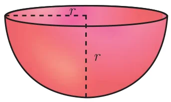
Let \(r\) be the radius of the solid hemisphere.
Volume of the solid hemisphere \(= \frac{1}{2}\) (volume of sphere)
\(= \frac{1}{2}\left[\frac{4}{3}\pi r^3\right]\)
Volume of a solid hemisphere \(= \frac{2}{3}\pi r^3\) cu. units
7.3.7 Volume of hollow hemisphere (volume of the material used)
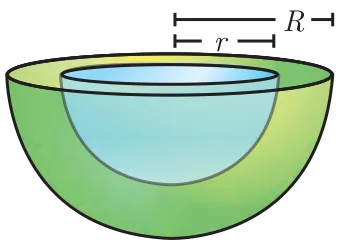
Let \(r\) and \(R\) be the inner and outer radius of the hollow hemisphere.
\(\begin{Bmatrix}\text{Volume of hollow}\\ \text{hemisphere}\end{Bmatrix} = \begin{bmatrix}\text{Volume of outer}\\ \text{hemisphere}\end{bmatrix} - \begin{bmatrix}\text{Volume of inner}\\ \text{hemisphere}\end{bmatrix}\)
\(= \frac{2}{3}\pi R^3 - \frac{2}{3}\pi r^3\)
Volume of a hollow hemisphere \(= \frac{2}{3}\pi(R^3 - r^3)\) cu. units
Thinking Corner
A cone, a hemisphere and a cylinder have equal bases. The heights of the cone and cylinder are equal and are same as the common radius. Are they equal in volume?
Example 7.21
The volume of a solid hemisphere is \(29106 \text{ cm}^3\). Another hemisphere whose volume is two-third of the above is carved out. Find the radius of the new hemisphere.
Solution
Let \(r\) be the radius of the hemisphere.
Given that, volume of the hemisphere \(= 29106 \text{ cm}^3\)
Now, volume of new hemisphere \(= \frac{2}{3}\) (Volume of original sphere)
\(= \frac{2}{3} \times 29106\)
Volume of new hemisphere \(= 19404 \text{ cm}^3\)
\(\frac{2}{3}\pi r^3 = 19404\)
\(r^3 = \frac{19404 \times 3 \times 7}{2 \times 22} = 9261\)
\(r = \sqrt[3]{9261} = 21\) cm
Therefore, \(r = 21\) cm
Thinking Corner
- Give any two real life examples of sphere and hemisphere.
- A plane along a great circle will split the sphere into \(\underline{\qquad}\) parts.
- If the volume and surface area of a sphere are numerically equal, then the radius of the sphere is \(\underline{\qquad}\).
Example 7.22
Calculate the mass of a hollow brass sphere if the inner diameter is 14 cm and thickness is 1mm, and whose density is \(17.3 \text{ g/cm}^3\). (Hint: mass = density × volume)
Solution
Let \(r\) and \(R\) be the inner and outer radii of the hollow sphere.
Given that, inner diameter \(d = 14\) cm; inner radius \(r = 7\) cm; thickness \(= 1 \text{ mm} = \frac{1}{10}\) cm
Outer radius \(R = 7 + \frac{1}{10} = \frac{71}{10} = 7.1\) cm
Volume of hollow sphere \(= \frac{4}{3}\pi(R^3 - r^3)\) cu. units
\(= \frac{4}{3} \times \frac{22}{7}(357.91 - 343) = 62.48 \text{ cm}^3\)
But, density of brass in \(1 \text{ cm}^3 = 17.3\) gm
Total mass \(= 17.3 \times 62.48 = 1080.90\) gm
Therefore, total mass is 1080.90 grams.
Progress Check
- What is the ratio of volume to surface area of a sphere?
- The relationship between the height and radius of the hemisphere is \(\underline{\qquad}\).
- The volume of a sphere is the product of its surface area and \(\underline{\qquad}\).
7.3.8 Volume of frustum of a cone
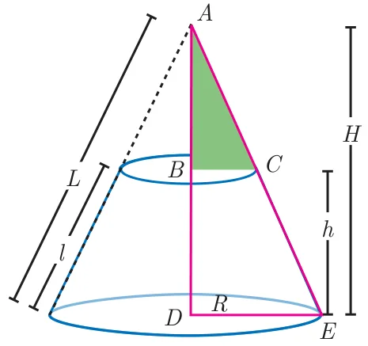
Let \(H\) and \(h\) be the height of cone and frustum respectively, \(L\) and \(l\) be the slant height of the same.
If \(R\), \(r\) are the radii of the circular bases of the frustum, then volume of the frustum of the cone is the difference of the volumes of the two cones.
\(V = \frac{1}{3}\pi R^2 H - \frac{1}{3}\pi r^2(H - h)\)
Since the triangles \(ABC\) and \(ADE\) are similar, the ratio of their corresponding sides are proportional.
Therefore, \(\dfrac{H - h}{H} = \dfrac{r}{R} \Rightarrow H = \dfrac{hR}{R - r} \qquad \ldots(1)\)
\(V = \frac{1}{3}\pi R^2 H - \frac{1}{3}\pi r^2(H - h)\)
\(= \frac{\pi}{3}H(R^2 - r^2) + \frac{1}{3}\pi r^2 h\)
\(= \dfrac{\pi}{3}\,\dfrac{hR}{R - r}(R^2 - r^2) + \dfrac{\pi}{3}r^2 h \quad \text{[using (1)]}\)
\(= \frac{\pi}{3}hR(R + r) + \frac{\pi}{3}r^2 h\)
Volume of a frustum \(= \frac{\pi h}{3}(R^2 + Rr + r^2)\) cu. units
Thinking Corner
Is it possible to obtain the volume of the full cone when the volume of the frustum is known?
Example 7.23
If the radii of the circular ends of a frustum which is 45 cm high are 28 cm and 7 cm, find the volume of the frustum.
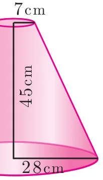
Solution
Let \(h\), \(r\) and \(R\) be the height, top and bottom radii of the frustum.
Given that, \(h = 45\) cm, \(R = 28\) cm, \(r = 7\) cm
Volume \(= \frac{1}{3}\pi[R^2 + Rr + r^2]h\) cu. units
\(= \frac{1}{3} \times \frac{22}{7} \times [28^2 + (28 \times 7) + 7^2] \times 45\)
\(= \frac{1}{3} \times \frac{22}{7} \times 1029 \times 45 = 48510\)
Therefore, volume of the frustum is \(48510 \text{ cm}^3\)
Do You Know?
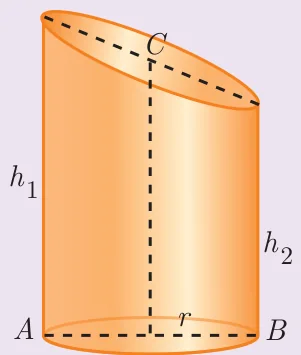
The adjacent figure represents an oblique frustum of a cylinder. Suppose this solid is cut by a plane through \(C\), not parallel to the base \(AB\), then
\(CSA = 2\pi r \times \dfrac{h_1 + h_2}{2}\) sq. units
where \(h_1\) and \(h_2\) denote the greatest and least height of the frustum.
Then its volume \(= \pi r^2 \times \dfrac{h_1 + h_2}{2}\) cu. units